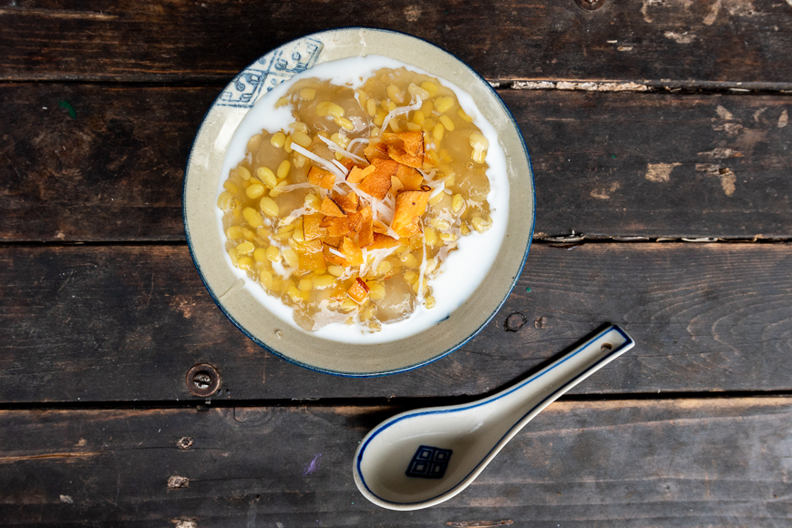
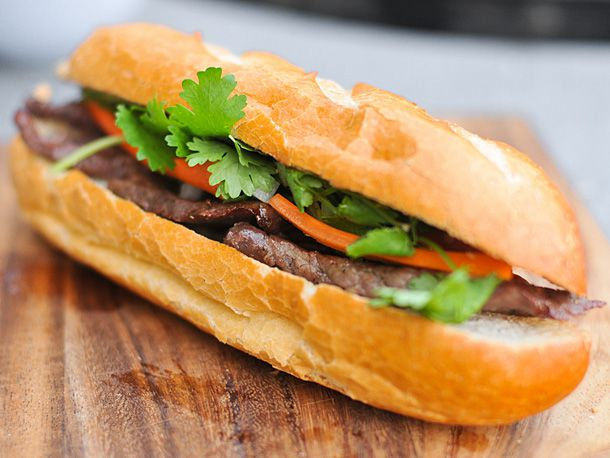
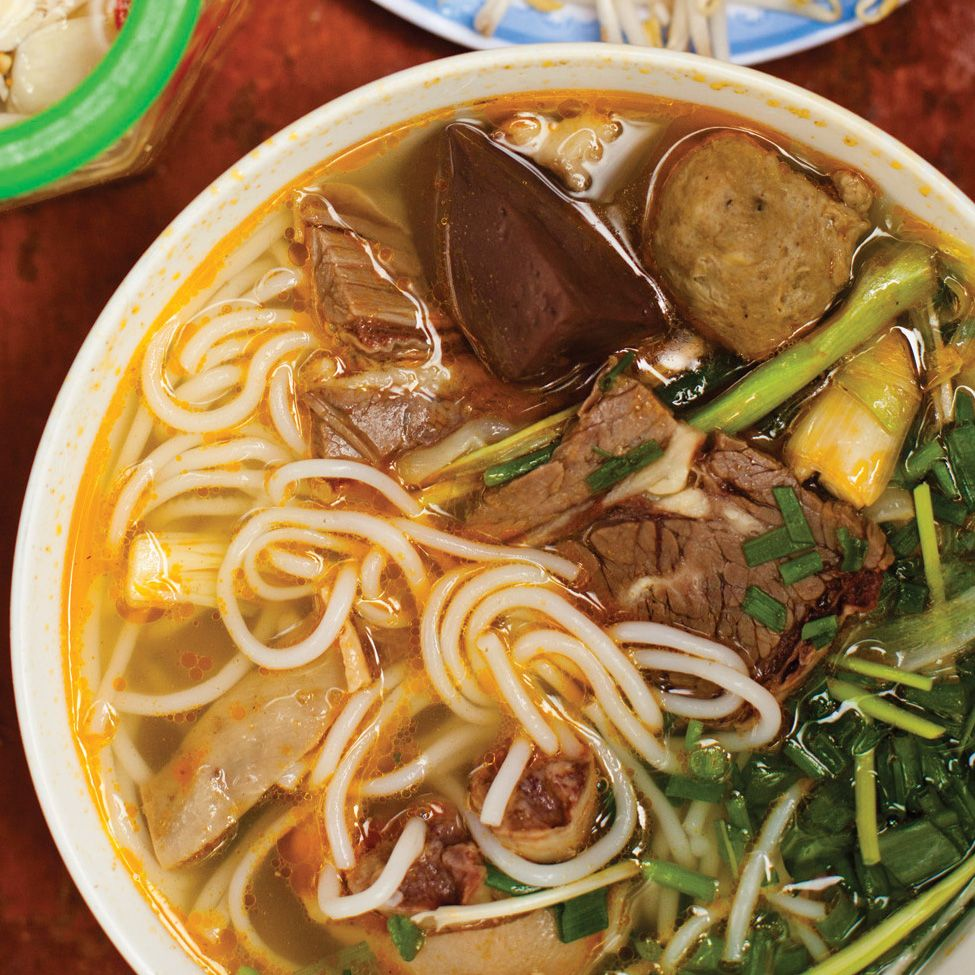

Vietnamese Foods:
Soup
Baguette
Dessert
 A mix of corn, coconut cream and tapioca pearls.
 A typical Vietnamese roll or sandwich is a fusion of meats and vegetables from native Vietnamese cuisine.
 A spicy, flavorful noodle soup dishs, featuring beef and a rich, spicy broth.